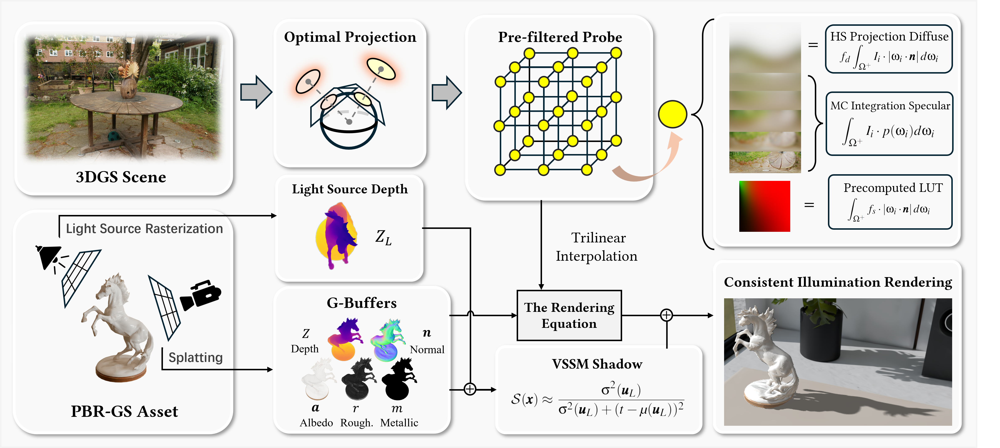

Inserting known PBR Gaussian assets into pre-trained 3D Gaussian Splatting (3DGS) scenes with physically plausible light transport remains computationally challenging, as existing methods rely on costly ray tracing or visibility precomputation. We propose a training-free, plug-and-play light-transport reformulation for real-time object composition in 3DGS. Our formulation establishes two bridges. First, it connects 3DGS radiance to PBR incident illumination by extracting the incident radiance field from Gaussian primitives and decomposing the hemispherical PBR integral into diffuse, specular, and transmissive components. Second, it connects 3DGS visibility to deferred shadowing by deriving opacity-weighted light-space depth moments directly from Gaussian splatting. The resulting shared visibility integral unifies object self-occlusion and object-to-scene shadows, enabling Variance Soft Shadow Mapping (VSSM)-based composition without voxel ray marching. Experiments on synthetic and real-world datasets demonstrate high-fidelity integration with plausible illumination, shadows, and transmissive effects without retraining. Running at over 40 FPS on consumer hardware, our framework combines rendering quality with real-time efficiency for interactive scene editing and augmented reality. Our code is publicly available at https://github.com/xx-luozi-xx/3DGS-Object-Composition.
Abstract
Framework

The framework operates via two parallel streams.
Scene Stream (top): Given a pre-trained 3DGS scene, we first derive the unoccluded incident radiance field via optimal projection. The projected Gaussian primitives then pass through our physics-driven light transport factorization module, analytically decomposing the incident radiance into diffuse irradiance and specular radiance components, which are subsequently baked into a compact panoramic radiance probe without any network training.
Asset Stream (bottom): A virtual object, represented as a PBR Gaussian asset, is independently rasterized via standard Gaussian splatting. During shading, each surface point queries the pre-built radiance probe to evaluate its diffuse, specular, and transmissive material responses. Concurrently, by evaluating depth from the light source's perspective, scene-level occlusion and object self-shadowing are unified under a single VSSM formulation, enabling high-quality dynamic soft shadows without ray-marching.
The two streams are composited in a deferred rendering pass, producing a seamlessly integrated result at over 40 FPS on standard consumer hardware.